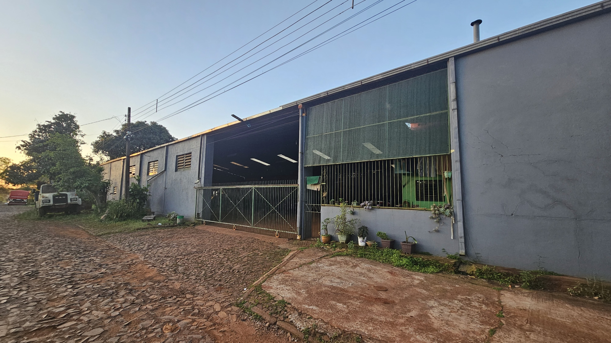

Mecanica Estrella

La Mecánica Estrella, pionera en la Colonia Yguazú – Paraguay, nació del esfuerzo y la pasión por los motores. Con años de experiencia, se convirtió en la mejor mecánica agrícola de la ciudad, reconocida por su trabajo honesto y dedicado. Una mecánica raíz, que realmente entiende de todo y mantiene viva la tradición del buen servicio en Yguazú. Más que un taller, es un símbolo de tradición y conocimiento, una mecánica de raíz que entiende cada máquina como si fuera propia. Su equipo combina la experiencia de años con la innovación, garantizando que cada tractor, cosechadora o vehículo esté siempre listo para rendir al máximo.